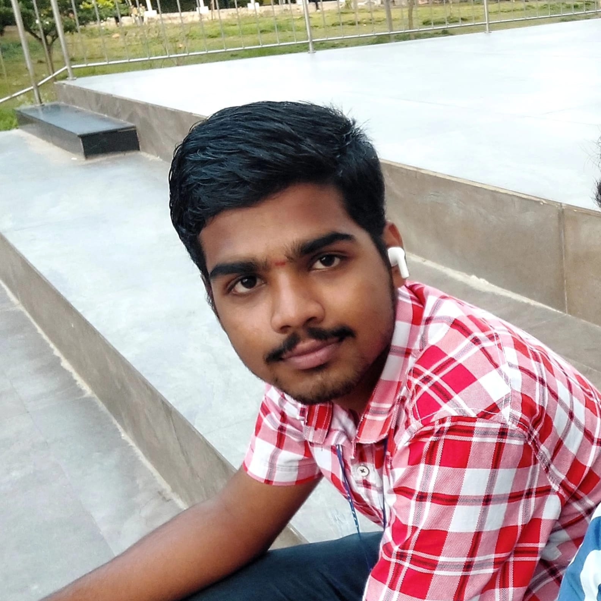

Lakshmi Hrushikesh Vadlamudi
I’m driven by a passion for building seamless digital experiences. My focus is on creating user-friendly and efficient web interfaces. I aim to enhance user satisfaction through thoughtful design. Every project I take on is centered around clarity, usability, and impact.

About
I'm an aspiring Full-Stack Web Developer passionate about building user-friendly and accessible digital experiences. With a strong foundation in the MERN stack (MongoDB, Express.js, React.js, Node.js), I specialize in crafting dynamic, secure, and responsive web applications.
- Developing full-stack apps like task managers.
- Implementing JWT-based authentication, protected routes, and RESTful APIs.
- Designing intuitive user interfaces using HTML, CSS, JavaScript, Tailwind, and Figma.
- Managing MongoDB databases with proper relationships, indexing, and CRUD operations.
Beyond web development, I explore IoT and embedded systems. I’ve built assistive tech solutions using Arduino Nano, NRF24L01, and Voice Recognition Modules, focused on accessibility for the visually impaired.
I believe in using technology to simplify lives—and I’m constantly learning, building, and evolving.
Voice Based Communication System
An indoor object searching system designed for visually impaired users using voice commands. It uses Arduino Nano, NRF24L01 modules, and a Voice Recognition Module V3. On voice input, the system wirelessly signals the corresponding receiver to activate a buzzer near the desired object.
Tech used : C++ with Arduino for controlling NRF24L01 and Voice Recognition Module
Secure Task-Managment Web App
A task management app allows users to securely manage their daily tasks with features like user authentication (signup, login), protected routes, task creation, editing, deletion, and status updates. It ensures personalized access, real-time updates, and a user-friendly interface for effective productivity.
Tech used : MERN Stack
Tic-Tac-Toe
A classic Tic Tac Toe game where two players take turns marking X and O on a 3×3 grid. The game checks for a winner or draw after each move and resets automatically.Added basic security to the Tic Tac Toe game by validating user inputs and preventing script injection. Ensured the game runs in a controlled environment without unauthorized code execution.
Tech used : HTML, CSS, JS (Scripting Languages)